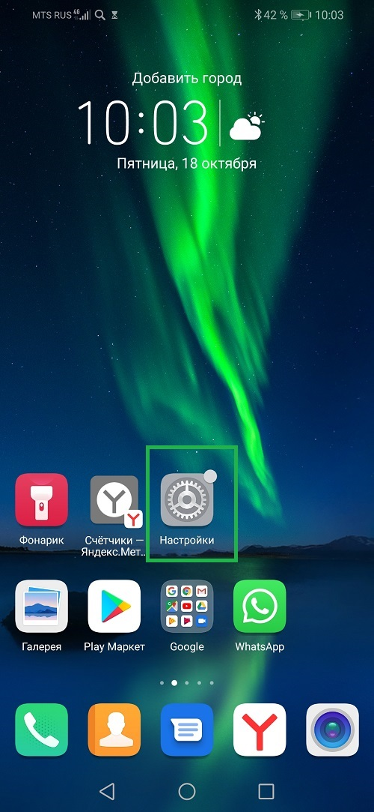

Скриншот — это воспроизведение текущего содержимого экрана компьютера, мобильного устройства или веб-страницы в виде статичного изображения. Если говорить проще то это снимок экрана.

Нажмите кнопку питания и уменьшения громкости, если вы на телефоне.